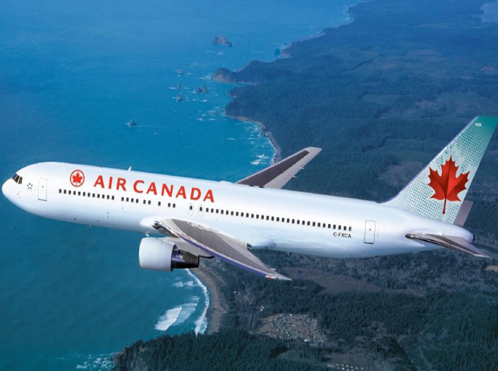

Voici le poème du jour
Le voyageur
Partir d'une ville qui semble nous appartenir,
vers un lieu qui semble nous faire plaisir.
Dans un milieu où la tranquillité règne,
avec un paysage qui nous accompagne.
Je voyage pour la culture,
pour la dense nature,
la liberté qui m'inspire,
et la nourriture qui me fait grossir.
On rêve tous de voir,
l'océan qui reflète le ciel
comme un géant miroir,
qui reflète la lumière d'une énergie essentielle.
Une culture qui nous ressemble,
mais qui n'est pas la même qu'à la maison.
Gôuter à de nouvelles choses semble
une nouvelle aventure pour mon bedon.
Partir d'une ville qui nous est familière.
On se sent libre dans cette nouvelle ère,
ce tout-inclus qui nous offre tout
même si parfois, on est à bout.
Mais en bout de ligne,
le retour n'est jamais aisé.
Savoir ce qui nous attend au bout de la ligne...
Le travail acharné!
Nikolas Ouimet
SOURCE vers le poème
